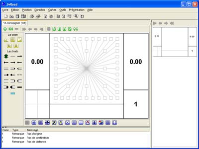
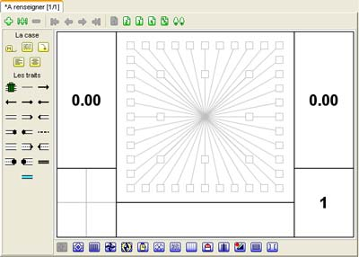
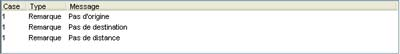

Choisir
Nouveau dans le menu
Livre, une
boîte de dialogue apparaît pour vous demander des renseignements concernant votre nouveau road book. Dans le cadre de cette formation, nous allons pour l'instant nous limiter à effectuer un click sur le bouton "Ok" et obtenir l'image de ci-dessous.

Le petit onglet "*A renseigner [1/1]" indique pour l'instant que votre road book s'appelle "A renseigner", qu'il comporte une case, que la case en cours d'édition est la première et que des modifications (la petite *) ont été effectuées depuis la dernière sauvegarde (normal dans le cas présent puisque nous venons de le créer). Pour chaque road book créé ou ouverture en même temps vous aurez un onglet supplémentaire. La zone de travail associée à l'onglet permet d'éditer les cases du road.

La zone de travail située sur la droite correspond au navigateur. Le navigateur permet de se déplacer dans le road book et d'avoir un aperçu des cases telles qu'elles pourront apparaître au final.
La zone de travail située en bas correspond au vérificateur. Le vérificateur analyse en temps réel le contenu du road book pour y repérer les éventuelles erreurs ou avertissements que pourrait comporter votre road book.
